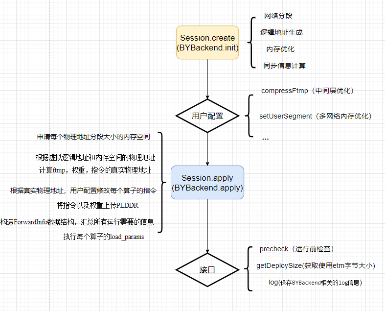

Icraft BuyiBackend#
BuyiBackend 是Icraft运行时的后端之一，
负责处理指定QL7100AI为计算资源的算子。
能够绑定到Buyi后端的算子包含：
HardOp在DTC上执行的
Cast算子
提示
绑定后端的动作由Icraft-XRT完成，具体用法参考XRT的Session章节。
BuyiBackend提供以下功能接口：
compressFtmp：将网络输出的中间层进行优化，可以显著减少网络在ETM上（即PL DDR）的内存占用userSetSegment： 将网络某个分段使用的内存与用户申请的内存相绑定，从而可以实现多网络间的内存复用precheck：在部署后检查指令与权重在ETM上的数据与PS内存中的数据是否相同getDepolySize：获取session在etm占用的总内存字节大小log：保存BuyiBackend中相关的逻辑地址、物理地址信息speedMode：将执行序上连续的、相同计算精度的HardOp合并执行，能够降低软件调度产生的时间开销
提示
在实际使用场景中，BuyiBackend的使用依托于 icraft::xrt::Session ，
Session的构造过程中会完成BuyiBackend的初始化，
Session的apply部署时也会完成BuyiBackend的部署
BuyiBackend和Session之间的关系如下：

BuyiBackend在完成初始化（Init）和及部署（apply）的过程中会构造一些必要的数据结构：
ValueInfo：与icraft::xir::Value类的对应，包含BuyiBackend中一些补充信息HardOpInfo：与icraft::xir::HardOp类的对应，包含BuyiBackend中一些补充信息LogicSegment：逻辑分段类，在BuyiBackend 初始化时生成，表示对应network_view的各分段的逻辑地址相关数据PhySegment：物理分段类，在BuyiBackend在apply部署后生成，表示对应network_view的各分段的真实物理地址相关数据ForwardInfo：前向所需要的信息，包含value_map：network_view中包含的所有FTMP（即Value）信息hardop_map：network_view中包含的所有HardOp的信息idx_map：network_view中包含的所有算子的同步信息
提示
network_view是原网络所有算子的子集，按照原有执行序排列。 BuyiBackend的输入，即处理的对象，为Session指派的所有以Buyi为后端的算子集合。
〇 用户接口#
Icraft 提供了C++ API和Python API作为用户接口。
一 快速开始#
1.1 构造BuyiDevice#
BuyiDevice是与Buyibackend绑定的设备，存在mmu和非mmu两种运行模式。
在非mmu模式下，网络操作地址都直接针对物理地址，面对多网络地址冲突的情况，运行时需要修改网络指令；
在mmu模式下，把网络操作地址看作逻辑地址，运行时根据实际情况构造逻辑地址和物理地址的映射关系，无需修改网络指令。
mmu模式相比于非mmu模式的优势在于优化内存占用，在编译阶段完成合并算子、内存优化的功能配置，可以有效减少运行时占用的内存。 BuyiDevice默认使用mmu模式，但对于复杂的网络使用情况（例如使用view拆分网络，对子网络进行合并算子和内存优化配置）， 则建议使用非mmu模式。
两种模式下对合并算子和内存优化的配置存在不同条件，总结如下：
mmu模式，若在编译阶段进行了合并算子和内存优化配置，则不支持在Buyibackend中配置合并算子和内存优化
非mmu模式，编译阶段不能进行合并算子和内存优化的配置，仅支持在Buyibackend中配置合并算子和内存优化
BuyiBackend会对用户的配置以及输入的网络进行检查， 若出现报错，用户可根据报错信息检查输入网络配置和BuyiDevice的配置，采用正确的使用方法。
1.1.1 构造BuyiDevice并设置为非mmu模式#
C++ 示例#
1// 1.配置Device启动的url，以axi模式的url配置为例
2auto dev_url = "axi://ql100aiu?npu=0x40000000&dma=0x80000000";
3// 2.打开设备
4Device device;
5device = Device::Open(dev_url);
6// 关闭mmu模式
7device.cast<BuyiDevice>().mmuModeSwitch(false);
Python示例#
1# 1.导入必要的库
2import xir
3from xrt import *
4from buyibackend import *
5import unittest
6
7# 2.打开设备，以axi模式为例
8dev_url = "axi://ql100aiu?npu=0x40000000&dma=0x80000000"
9device = Device.Open(dev_url)
10# 关闭mmu模式
11BuyiDevice(device).mmuModeSwitch(False)
1.1.2 构造BuyiDevice并设置为mmu模式#
BuyiDevice默认开启mmu模式，用户无需显式开启。
提示
应用工程与之前3.x版本兼容。
如需手动开启，见以下示例：
C++ 示例#
1// 1.配置Device启动的url，以axi模式的url配置为例
2auto dev_url = "axi://ql100aiu?npu=0x40000000&dma=0x80000000";
3// 2.打开设备
4Device device;
5device = Device::Open(dev_url);
6// 关闭mmu模式
7device.cast<BuyiDevice>().mmuModeSwitch(true);
Python示例#
1# 1.导入必要的库
2import xir
3from xrt import *
4from buyibackend import *
5import unittest
6
7# 2.打开设备，以axi模式为例
8dev_url = "axi://ql100aiu?npu=0x40000000&dma=0x80000000"
9device = Device.Open(dev_url)
10# 关闭mmu模式
11BuyiDevice(device).mmuModeSwitch(True)
1.2 构造BuyiBackend#
构造BuyiBackend有两种方法：
Session::Create时构造
直接构造BuyiBackend
1.2.1 Session::Create时构造#
C++ 示例#
1auto json_file = "./SSD_BY.json";
2auto raw_file = "./SSD_BY.raw";
3auto img_file = "./ssd300.png";
4
5// 打开设备
6auto host_device = HostDevice::Default();
7auto buyi_device = Device::Open("axi://ql100aiu?npu=0x40000000&dma=0x80000000");
8
9// 加载网络
10auto network = Network::CreateFromJsonFile(json_file);
11network.loadParamsFromFile(raw_file);
12
13// 创建Session1
14// 该方法会根据模板参数的顺序，自动创建Backend对象
15// 首先尝试将算子绑定到BuyiBackend上，如果不支持，则绑定到HostBackend上
16auto sess1 = Session::Create<BuyiBackend, HostBackend>(network, { buyi_device, host_device });
17
18// 获取sess1所有的Backends
19auto& backends = sess1->backends;
20auto buyi_backend = backends[0].cast<BuyiBackend>();
Python示例#
1# 导入必要的库
2import xir
3from xrt import *
4from host_backend import *
5from buyi_backend import *
6import unittest
7
8# 获取一个网络
9# Input → Conv2d → Cast → HardOp → Cast → Relu → Maxpool → Output
10network = GenerateNetwork()
11
12# 创建Session，按顺序传入想要绑定的后端类型
13sess1 = Session.Create([BuyiBackend, HostBackend], network.view(0), [ HostDevice.Default(), Device() ])
14sess1.apply()
15
16# 可选：检验算子是否正确绑定后端
17backend_bindings = sess1.backendBindings()
18self.assertTrue(backend_bindings[1].is_type(HostBackend)) # Conv2d
19self.assertTrue(backend_bindings[2].is_type(HostBackend)) # Cast
20self.assertTrue(backend_bindings[3].is_type(BuyiBackend)) # HardOp
21self.assertTrue(backend_bindings[4].is_type(BuyiBackend)) # Cast
22self.assertTrue(backend_bindings[5].is_type(HostBackend)) # Relu
23self.assertTrue(backend_bindings[6].is_type(HostBackend)) # Maxpool
24
25# 也可以使用CreateByOrder方法，将算子按顺序绑定到已有的Backend对象上
26sess2 = Session.CreateByOrder(network.view(0), [BuyiBackend.Init(), HostBackend.Init()], [ HostDevice.Default(), Device() ])
27buyibackend = BuyiBackend(sess2.backends[0])
1.2.2 直接构造BuyiBackend#
C++ 示例#
1auto dev_url = "axi://ql100aiu?npu=0x40000000&dma=0x80000000";
2auto dev_url_socket = "socket://ql100aiu@192.168.125.148:9981?npu=0x40000000&dma=0x80000000";
3
4//打开设备
5Device device;
6device = Device::Open(dev_url_socket);
7
8//加载网络
9auto network = Network::CreateFromJsonFile("E:/test/json&raw/30/seresnet_BY.json");
10network.loadParamsFromFile("E:/test/json&raw/30/seresnet_BY.raw");
11
12//初始化BuyiBackend
13icraft::xrt::Backend backend = BuyiBackend::Init();
14backend.init(network, device);
15
16//类型转换
17auto by_backend = backend.cast<BuyiBackend>();
Python示例#
1# 导入必要的库
2import xir
3from xrt import *
4from buyibackend import *
5import unittest
6
7#打开设备
8dev_url = "axi://ql100aiu?npu=0x40000000&dma=0x80000000"
9dev_url_socket = "socket://ql100aiu@192.168.125.148:9981?npu=0x40000000&dma=0x80000000"
10device = Device.Open(dev_url_socket)
11
12#加载网络
13network = xir.Network.CreateFromJsonFile("E:/test/json&raw/30/seresnet_BY.json")
14network.loadParamsFromFile("E:/test/json&raw/30/seresnet_BY.raw")
15
16#构造backend
17backend = Backend.Create(BuyiBackend, network.view(0), device)
18#类型转换
19buyibackend = BuyiBackend(backend)
重要
当网络部署完成后，只有通过Session的forward接口才能真正执行前向推理，BuyiBackend中不具备该能力。 如果使用者要搭建真正能前向运行的应用工程，请按照： 构建Session->初始化各个Backend->调用forward执行推理 的流程进行搭建。
1.3 网络部署的功能配置#
BuyiBackend 能够配置一些附加功能以起到优化运行性能、Debug的作用。
需要注意附加功能的配置时机，按照配置时机可分为
apply部署前配置：speedMode，compressFtmp，userSetSegment
apply部署后配置：precheck，sub
前后均可配置：log，getDepolySize
警告
BuyiBackend
中开启compressFtmp或speedMode这两项功能时，有以下两个限制条件：
1、 当编译阶段的配置为：
etmopt=1或-1no_mergeops=false
即网络编译阶段开启合并算子和内存优化，此时，
BuyiBackend
中将不再支持开启这两项功能，否则运行阶段将抛出异常。
2、 需要关闭mmu模式，具体调用方式见以下示例
1.3.1 compressFtmp 压缩中间层#
C++ 示例#
1// 1.配置Device启动的url，以axi模式的url配置为例
2auto dev_url = "axi://ql100aiu?npu=0x40000000&dma=0x80000000";
3
4// 2.打开设备，这里以socket模式为例，若在axi模式下运行，将dev_url_socket替换为dev_url
5Device device;
6device = Device::Open(dev_url);
7// 关闭mmu模式，否则调用compressFtmp接口时会抛出异常
8device.cast<BuyiDevice>().mmuModeSwitch(false);
9
10// 3.构建Network
11auto network = Network::CreateFromJsonFile("./seresnet_BY.json");
12network.loadParamsFromFile("E:/test/json&raw/30/seresnet_BY.raw");
13
14// 4.构建BuyiBackend
15icraft::xrt::Backend backend = BuyiBackend::Init();
16backend.init(network, device);
17auto by_backend = backend.cast<BuyiBackend>();
18
19// 5.调用compressFtmp接口来打开内存复用功能
20by_backend.compressFtmp();
21
22// 6.调用apply接口完成网络在设备上的部署
23backend.apply();
24
25// 7.关闭设备
26Device::Close(device);
Python示例#
1# 1.导入必要的库
2import xir
3from xrt import *
4from buyibackend import *
5import unittest
6
7# 2.打开设备，以axi模式为例
8dev_url = "axi://ql100aiu?npu=0x40000000&dma=0x80000000"
9device = Device.Open(dev_url)
10# 关闭mmu模式，否则调用compressFtmp接口时会抛出异常
11BuyiDevice(device).mmuModeSwitch(False)
12
13# 3.加载网络
14network = xir.Network.CreateFromJsonFile("E:/test/json&raw/30/seresnet_BY.json")
15network.loadParamsFromFile("E:/test/json&raw/30/seresnet_BY.raw")
16
17# 4.构造BuyiBackend，这里构造两个，分别开启和关闭中间层优化
18backend1 = Backend.Create(BuyiBackend, network.view(0), device)
19backend2 = Backend.Create(BuyiBackend, network.view(0), device)
20buyibackend1 = BuyiBackend(backend1)
21buyibackend2 = BuyiBackend(backend2)
22
23# 5.打开优化中间层（在apply之前）
24buyibackend2.compressFtmp()
25
26# 6.完成两个BuyiBackend的部署
27backend1.apply()
28backend2.apply()
29
30# 7.比较两个BuyiBackend实际部署后所占ETM的大小，buyibackend2的占用会更少、更节省ETM空间
31self.assertTrue(buyibackend1.getDeploySize() >= buyibackend2.getDeploySize())
1.3.2 speedMode#
C++ 示例#
1// 1.打开设备
2
3// 2.加载网络
4
5// 3.构造网络输入
6
7// 4.构造Session
8auto sess = Session::Create<BuyiBackend, HostBackend>(network, { buyi_device, host_device });
9
10// 5.打开合并硬算子功能
11auto buyi_backend = sess->backends[0]..cast<BuyiBackend>();
12buyibackend.speedMode();
13
14// 6.部署Session
15sess.apply();
16
17// 7.执行前向
18
19// 8.关闭设备
提示
代码示例中的缺省部分参考1.2.1节，这里仅展示必要的接口使用方式和调用位置
1.3.3 userSetSegment#
C++ 示例#
1auto dev_url = "axi://ql100aiu?npu=0x40000000&dma=0x80000000";
2auto dev_url_socket = "socket://ql100aiu@192.168.125.148:9981?npu=0x40000000&dma=0x80000000";
3//开启设备
4Device device;
5device = Device::Open(dev_url_socket);
6
7//cast得到bydevice方便申请memchunk
8auto bydevice = device.cast<BuyiDevice>();
9
10//加载网络
11auto network = Network::CreateFromJsonFile("E:/test/json&raw/30/seresnet_BY.json");
12network.loadParamsFromFile("E:/test/json&raw/30/seresnet_BY.raw");
13
14//初始化buyibackend
15icraft::xrt::Backend backend1 = BuyiBackend::Init();
16icraft::xrt::Backend backend2 = BuyiBackend::Init();
17backend1.init(network, device);
18backend2.init(network, device);
19
20//cast得到BuyiBackend对象
21auto by_backend1 = backend1.cast<BuyiBackend>();
22auto by_backend2 = backend2.cast<BuyiBackend>();
23
24//部署前对by_backend2调用中间层优化
25by_backend2.compressFtmp();
26
27//由于两个buyibackend初始化用的是相同的网络，所以他们对应的指令数据段和权重数据段的逻辑字节大小肯定是相同的
28auto instr_bytesize = by_backend1->logic_segment_map.at(Segment::INSTR)->byte_size;
29auto weight_bytesize = by_backend1->logic_segment_map.at(Segment::WEIGHT)->byte_size;
30
31//虽然两个buyibackend初始化用的是相同的网络，但是by_backend2调用了中间层优化，此时两个buyibackend的中间层数据段的逻辑字节大小是不一样的
32//这里我们取较大的那个字节大小
33auto ftmp_bytesize1 = by_backend1->logic_segment_map.at(Segment::FTMP)->byte_size;
34auto ftmp_bytesize2 = by_backend2->logic_segment_map.at(Segment::FTMP)->byte_size;
35auto ftmp_bytesize = ftmp_bytesize1 > ftmp_bytesize2 ? ftmp_bytesize1 : ftmp_bytesize2;
36
37//向bydevice申请etm上的memchunk
38auto ftmp_chunk = bydevice.defaultMemRegion().malloc(ftmp_bytesize);
39auto weight_chunk = bydevice.defaultMemRegion().malloc(weight_bytesize);
40auto instr_chunk = bydevice.defaultMemRegion().malloc(instr_bytesize);
41
42//对于相同网络的buyibackend，其权重数据是一样的，所以可以通过复用同一片空间来实现内存优化，这时只要传入将申请的memchunk以及对应的分段属性传入接口
43//不同于权重层，指令层的数据即便网络相同，但在真实执行时由于输入输出层物理地址不同，其数据是不一样的，所以不能复用
44by_backend1.userSetSegment(weight_chunk, Segment::WEIGHT);
45by_backend2.userSetSegment(weight_chunk, Segment::WEIGHT);
46
47//对于中间层数据，我们只要传入较大字节大小的memchunk，即便是不同网络的buyibackend也能够复用内存空间
48by_backend1.userSetSegment(ftmp_chunk, Segment::FTMP);
49by_backend2.userSetSegment(ftmp_chunk, Segment::FTMP);
50
51//在配置完成后进行部署
52backend1.apply();
53backend2.apply();
54
55//此时输出两个buyibackend的log，可以看出相应权重以及中间层的真实物理地址在同一个区域
56by_backend1.log();
57by_backend2.log();
58
59//通过程序也可以验证两个backend的权重，中间层段是同一个memchunk，指令段是不同的memchunk
60//对于用户自行申请的memchunk，使用完成后用户要记得去释放
61REQUIRE(by_backend1->phy_segment_map.at(Segment::INSTR)->memchunk != by_backend2->phy_segment_map.at(Segment::INSTR)->memchunk);
62REQUIRE(by_backend1->phy_segment_map.at(Segment::WEIGHT)->memchunk == by_backend2->phy_segment_map.at(Segment::WEIGHT)->memchunk);
63REQUIRE(by_backend1->phy_segment_map.at(Segment::FTMP)->memchunk == by_backend2->phy_segment_map.at(Segment::FTMP)->memchunk);
64
65//部署完成后进行预检
66REQUIRE(by_backend1.precheck());
67REQUIRE(by_backend2.precheck());
68
69//关闭设备
70Device::Close(device);
Python示例#
1# 导入必要的库
2import xir
3from xrt import *
4from buyibackend import *
5import unittest
6
7dev_url = "axi://ql100aiu?npu=0x40000000&dma=0x80000000"
8dev_url_socket = "socket://ql100aiu@192.168.125.148:9981?npu=0x40000000&dma=0x80000000"
9device = Device.Open(dev_url_socket)
10bydevice = BuyiDevice(device)
11
12network = xir.Network.CreateFromJsonFile("E:/test/json&raw/30/seresnet_BY.json")
13network.loadParamsFromFile("E:/test/json&raw/30/seresnet_BY.raw")
14
15backend1 = Backend.Create(BuyiBackend, network.view(0), device)
16backend2 = Backend.Create(BuyiBackend, network.view(0), device)
17buyibackend1 = BuyiBackend(backend1)
18buyibackend2 = BuyiBackend(backend2)
19buyibackend2.compressFtmp()
20
21instr_bytesize = buyibackend1.logic_segment_map[Segment.INSTR].byte_size;
22weight_bytesize = buyibackend1.logic_segment_map[Segment.WEIGHT].byte_size;
23ftmp_bytesize1 = buyibackend1.logic_segment_map[Segment.FTMP].byte_size;
24ftmp_bytesize2 = buyibackend2.logic_segment_map[Segment.FTMP].byte_size;
25ftmp_bytesize = 0
26if ftmp_bytesize1 > ftmp_bytesize2:
27 ftmp_bytesize = ftmp_bytesize1
28else:
29 ftmp_bytesize = ftmp_bytesize2
30
31ftmp_chunk = bydevice.defaultMemRegion().malloc(ftmp_bytesize);
32weight_chunk = bydevice.defaultMemRegion().malloc(weight_bytesize);
33instr_chunk = bydevice.defaultMemRegion().malloc(instr_bytesize);
34
35buyibackend1.userSetSegment(weight_chunk, Segment.WEIGHT);
36buyibackend2.userSetSegment(weight_chunk, Segment.WEIGHT);
37
38buyibackend1.userSetSegment(ftmp_chunk, Segment.FTMP);
39buyibackend2.userSetSegment(ftmp_chunk, Segment.FTMP);
40
41backend1.apply()
42backend2.apply()
43
44buyibackend1.log()
45buyibackend2.log()
46
47self.assertTrue(buyibackend1.phy_segment_map[Segment.INSTR].memchunk != buyibackend2.phy_segment_map[Segment.INSTR].memchunk)
48self.assertTrue(buyibackend1.phy_segment_map[Segment.WEIGHT].memchunk == buyibackend2.phy_segment_map[Segment.WEIGHT].memchunk)
49self.assertTrue(buyibackend1.phy_segment_map[Segment.FTMP].memchunk == buyibackend2.phy_segment_map[Segment.FTMP].memchunk)
50
51self.assertTrue(buyibackend1.precheck())
52self.assertTrue(buyibackend1.precheck())
53Device.Close(device)
二 数据结构#
2.1 ValueInfo#
ValueInfo 与icraft::xir::Value类的对应，包含BuyiBackend中一些补充信息。
ValueInfo 有以下属性：
Value value：icraft::xir::Value的引用类，获得对应的Value指针bool is_ocm = false：若为true，表示对应的value数据存放在ocm上bool is_host = false：若为true，表示对应的value数据存放在host端std::vector<Value> real_to：real若为true, 可能包含与其共用etm为false的valueValue fake_from：real若为false，必定存在预期共用etm地址且为true的valueuint64_t logic_addr = 0：value 在etm分配的逻辑字节地址bool user_used = false：若为true，表示存放value的memchunk为用户申请uint64_t phy_addr = 0：value 在etm分配的真实物理字节地址uint64_t byte_size = 0：value 在etm上占据的字节大小Segment segment = Segment::FTMP：value 在etm上地址对应的分段类型
2.2 HardOpInfo#
HardOpInfo 与icraft::xir::HardOp类的对应，包含BuyiBackend中一些补充信息。
HardOpInfo 有以下属性：
uint64_t weights_logic_addr = 0：对应HardOp的权重在etm上分配的逻辑字节地址uint64_t weights_size = 0：对应HardOp的权重在etm上的字节大小uint64_t instr_logic_addr = 0：对应HardOp的指令在etm上分配的逻辑字节地址uint64_t instr_size = 0：对应HardOp的指令在etm上分配的逻辑字节大小bool user_used = false：若为true，表示对应HardOp在etm对应的memchunk为用户申请uint64_t weight_phy_addr：对应HardOp的权重在etm上的真实物理字节地址uint64_t instr_phy_addr：对应HardOp的指令在etm上的真实物理字节地址HardOp net_hardop：对应icraft::xir::HardOp类的指针std::vector<ULL> instr_data：对应HardOp执行的指令std::vector<int> merge_from：如果在speedMode下，表示合并前的hardop op_id集合std::pair<int,int> sync_idx：对应HardOp的同步信息
2.3 LogicSegment#
LogicSegment 逻辑分段类，在BuyiBackend 初始化时生成，表示对应network_view的各分段的逻辑地址相关数据。
LogicSegment 有以下属性：
std::unordered_map<int, ValueInfo> info_map：逻辑分段包含的valueInfo信息 <v_id, valueInfo>std::unordered_map<int, HardOpInfo> hardop_map：逻辑分段包含的hardOp信息 <op_id, hardopInfo>uint64_t logic_addr = 0：逻辑分段在etm的逻辑字节地址uint64_t byte_size = 0：逻辑分段在etm的字节大小Segment segment_type：逻辑分段的分段类型
2.4 PhySegment#
PhySegment 表示某一个内存区域上分配的一块连续内存块。MemChunk 没有构造函数，所有的 MemChunk 都是由 MemRegion 的 malloc 方法分配产生的。
PhySegment 有以下属性：
std::map<int, ValueInfo> info_map：物理分段包含的valueInfo信息 <v_id, valueInfo>std::map<int, HardOpInfo> hardop_map：物理分段包含的hardOp信息 <op_id, hardopInfo>uint64_t phy_addr：物理分段在etm上的真实物理字节地址uint64_t byte_size = 0：物理分段在etm的字节大小Segment segment_type：物理分段的分段类型MemChunk memchunk：物理分段在etm上申请的memchunkbool user_used = false：若为true，表示物理分段的memchunk是用户申请的
2.5 ForwardInfo#
ForwardInfo 包含前向所需要的信息
ForwardInfo 有以下属性：
std::unordered_map<int, ValueInfo>& value_map：物理分段包含的valueInfo信息 <v_id, valueInfo>std::unordered_map<int, HardOpInfo>& hardop_map：network_view包含的所有hardopInfo的集合 <op_id, HardOpInfo>std::map<int, std::pair<int, int>>& idx_map：network_view中所有op的同步信息集合 <op_id, sync_idx>
2.6 BuyiBackend#
BuyiBackend 表示执行在BUYI架构7100芯片的后端。
BuyiBackend 除了有之前的接口外还有以下属性：
std::map<int64_t, ValueInfo> value_info：包含network_view所有valueInfo的信息, <v_id, ValueInfo>ForwardInfo forward_info：包含buyibackend所有前向所需要的信息std::unordered_map<Segment, LogicSegment> logic_segment_map：包含buyibackend的所有逻辑分段信息，<segment_type, logicSegment>std::unordered_map<Segment, PhySegment> phy_segment_map：包含buyibackend的所有物理分段信息, <segment_type, phySegment>std::vector<HardOpInfo> speed_ops_：合并后的算子列表std::list<Value> value_list：所有在etm上真实分配空间的value的信息bool is_compressftmp_ = false：若为true, buyibackend开启compressFtmp功能bool is_applied_ = false：若为true, buyibackend已完成部署static int buyibackend_sid：buyibackend的静态技术，计算当前程序下buyibackend的个数int buyibackend_id = 0：当前buyibackend的idSegTable seg_table_：记录段表中的逻辑地址和物理地址等相关数据bool is_speedmode_ = false：若为true，buyibackend开启speedmodebool is_compressftmp_ = false：若为true, buyibackend开启compressFtmp功能bool is_applied_ = false：若为true, buyibackend已完成部署bool is_mmu = true：若为true, buyibackend开启mmu
以下以 结合icraft::xrt::Session，展示具体的接口和属性使用方法：
1//静态函数，通过图片以及dtype构造icraftL::xrt::Tensor
2static auto img2Tensor = [](const std::string& img_path, const TensorType& dtype) {
3 if (std::filesystem::exists(img_path) == false) {
4 throw std::logic_error("[Error in SimulatorInput::setImageFile] image file not exist, please check.");
5 }
6
7 cv::Mat img = cv::imread(img_path, cv::IMREAD_COLOR);
8 cv::Mat converted;
9 img.convertTo(converted, CV_32F);
10
11 auto& tensor_shape = dtype->shape;
12 auto& tensor_layout = dtype->layout;
13
14 int H = converted.rows;
15 int W = converted.cols;
16 int C = converted.channels();
17
18 std::vector<int64_t> output_shape = { 1, H, W, C };
19 auto output_type = TensorType(FloatType::FP32(), output_shape, tensor_layout);
20 auto output_tensor = Tensor(output_type).mallocOn(HostDevice::MemRegion());
21 auto output_tptr = (float*)output_tensor.data().cptr();
22 std::copy_n((float*)converted.data, H * W * C, output_tptr);
23
24 return output_tensor;
25};
26
27//打开device
28auto dev_url = "axi://ql100aiu?npu=0x40000000&dma=0x80000000";
29auto dev_url_socket = "socket://ql100aiu@192.168.125.77:9981?npu=0x40000000&dma=0x80000000";
30Device device;
31device = Device::Open(dev_url_socket);
32
33
34auto json_file = "E:/test/json&raw/30/nafnet16_BY_int8.json";
35auto raw_file = "E:/test/json&raw/30/nafnet16_BY_int8.raw";
36auto img_file = "E:/test/images/elephant.jpg";
37
38//构造加载网络
39auto network = Network::CreateFromJsonFile(json_file);
40network.loadParamsFromFile(raw_file);
41
42//构造session，同时构造BuyiBackend以及HostBakcend并完成算子绑定
43auto sess = Session::Create<BuyiBackend, HostBackend>(network, { device, HostDevice::Default()});
44
45//从session处得到buyi_backend
46auto buyi_backend = sess->backends[0].cast<BuyiBackend>();
47
48//配置中间层优化
49buyi_backend.compressFtmp();
50
51//运行前apply部署
52sess.apply();
53
54//部署完成后进行预检，输出log
55buyi_backend.precheck();
56buyi_backend.log();
57
58//通过network获得dtype并结合输入图片构造输入tensor
59auto input_dtype = network.inputOp()[0].dtype();
60auto input_tensor = img2Tensor(img_file, input_dtype);
61
62//执行forward前向得到输出
63auto output_tensors = sess.forward({ input_tensor });
64
65auto file_name = "./logs/" + network->name;
66if (!fs::is_directory(file_name) || !fs::exists(file_name)) {
67 fs::create_directories(file_name);
68}
69
70//通过buyibackend获得phy_segment_map以及value_map
71//value_map里面有前向所有valueInfo的合集
72auto phy_segment_map = buyi_backend->phy_segment_map;
73auto value_map = buyi_backend->forward_info->value_map;
74
75//这个循环函数的目的是将session运行过程中保存在etm上的Value全部以二进制文件的形式保存下来
76for (auto k_v : value_map) {
77 //如果value的数据在host或者ocm上就跳过
78 if (k_v.second->is_host || k_v.second->is_ocm) {
79 continue;
80 }
81 //获取forward_info中value相关数据
82 auto id = k_v.second->value->v_id;
83 auto byte_size = k_v.second->byte_size;
84 auto phy_addr = k_v.second->phy_addr;
85 auto mem_chunk = phy_segment_map.at(k_v.second->segment)->memchunk;
86 std::cout << "start dump v_id: " << id << std::endl;
87 std::shared_ptr<int8_t[]> temp = std::shared_ptr<int8_t[]>(new int8_t[byte_size]{ 0 });
88 //将value所在memchunk对应偏移的数据保存到内存中并以二进制的形式保存下来
89 mem_chunk.read((char*)temp.get(), phy_addr - mem_chunk->begin.addr(), byte_size);
90 std::ofstream out_file(file_name + "/" + std::to_string(id) + ".ftmp", std::ios::out | std::ios::binary);
91 out_file.write((char*)temp.get(), byte_size);
92 out_file.close();
93}
三 特殊说明#
对于多线程、多网络相连等应用场景，常常需要对网络进行拆分。 不同mmu模式下，拆分网络的方法也不同，若使用mmu模式，需使用XRT中的sub接口， 若使用非mmu模式，需使用XIR中的view接口。
view用于从原网络中创建一个子网络，创建session时buyibackend会重新计算物理分段信息， sub用于从原session中创建一个新的session, 这两个session共享相同的backends资源，但是network_view不同。 view相比于sub的使用场景更为灵活和广泛，但对于只涉及一个网络的情况下， sub可以不使用内存复用（userSetSegment）实现输入输出相连，更适用于较为简单的网络拆分场景。
3.1 view#
属于XIR中的接口，从一个网络拆分得到的多个子网络相连时需要使用内存复用将子网络输入段和输出段相连。 调用方法和时机具体见以下示例。
C++ 示例#
1//构造加载网络
2auto network = Network::CreateFromJsonFile(json_file);
3network.loadParamsFromFile(raw_file);
4
5//通过view拆分网络，分别获得两个子网络
6//这里的new_network1包含网络执行序的第0~1个算子，new_network2包含网络执行序的第2~最后算子，
7//view的使用方法详见XIR接口说明
8auto new_network1 = network.view(0,2);
9auto new_network2 = network.view(2);
10
11//使用view后的子网络构造session
12auto sess1 = Session::Create<BuyiBackend, HostBackend>(new_network1, { device, HostDevice::Default()});
13auto sess2 = Session::Create<BuyiBackend, HostBackend>(new_network2, { device, HostDevice::Default()});
14
15//sess1的输出段和sess2的输入段内存复用
16
17//运行前apply部署
18
19//执行forward前向得到输出
Python示例#
1# 构造加载网络
2network = Network.CreateFromJsonFile(json_file)
3network.loadParamsFromFile(raw_file)
4
5# 通过view拆分网络，分别获得两个子网络
6# 这里的new_network1包含网络执行序的第0~1个算子，new_network2包含网络执行序的第2~最后算子
7# view的使用方法详见XIR接口说明
8new_network1 = network.view(0,2)
9new_network2 = network.view(2)
10
11# 使用view后的子网络构造session
12sess1 = Session.Create([ BuyiBackend, HostBackend ], new_network1, [device, HostDevice.Default()])
13sess2 = Session.Create([ BuyiBackend, HostBackend ], new_network2, [device, HostDevice.Default()])
14
15# sess1的输出段和sess2的输入段内存复用
16
17# 运行前apply部署
18
19# 执行forward前向得到输出
提示
代码示例中的缺省部分参考1.3节，这里仅展示必要的接口使用方式和调用位置
3.2 sub#
属于XRT中的接口，两个session的buyibackend使用的是同一个物理分段信息，因此不需要使用内存复用将输入段和输出段相连。 调用方法和时机具体见以下示例。
C++ 示例#
1//构造加载网络
2auto network = Network::CreateFromJsonFile(json_file);
3network.loadParamsFromFile(raw_file);
4
5//构造session
6auto sess = Session::Create<BuyiBackend, HostBackend>(network, { device, HostDevice::Default()});
7
8//运行前apply部署
9sess.apply();
10
11//通过sub拆分网络，分别获得两个子session，
12//这里的sub_sess1使用的network_view是网络执行序的第0~1个算子，sub_sess2使用的network_view是网络执行序的第2~最后算子，
13//sub的使用方法详见XRT接口说明
14auto sub_sess1 = sess.sub(0, 2);
15auto sub_sess2 = sess.sub(2);
16
17//分别执行forward前向得到输出，不需要使用内存复用将sub_sess1的输出与sub_sess2的输入放在同一个内存段
18auto input_type = Image2Tensor(img_file);
19auto result1 = sub_sess1.forward({ input_type });
20auto result2 = sub_sess2.forward( result1 );
Python示例#
1# 构造加载网络
2network = Network.CreateFromJsonFile(json_file)
3network.loadParamsFromFile(raw_file)
4
5# 构造session
6sess1 = Session.Create([ BuyiBackend, HostBackend ], network, [device, HostDevice.Default()])
7
8# 通过sub拆分网络，分别获得两个子session，
9# 这里的sub_sess1使用的network_view是网络执行序的第0~1个算子，sub_sess2使用的network_view是网络执行序的第2~最后算子，
10# sub的使用方法详见XRT接口说明
11sub_sess1 = sess.sub(0, 2)
12sub_sess2 = sess.sub(2)
13
14# 分别执行forward前向得到输出
15input_type = Image2Tensor(img_file,-1,-1)
16result1 = sub_sess1.forward( [ input_type ] )
17result2 = sub_sess2.forward( result1 )